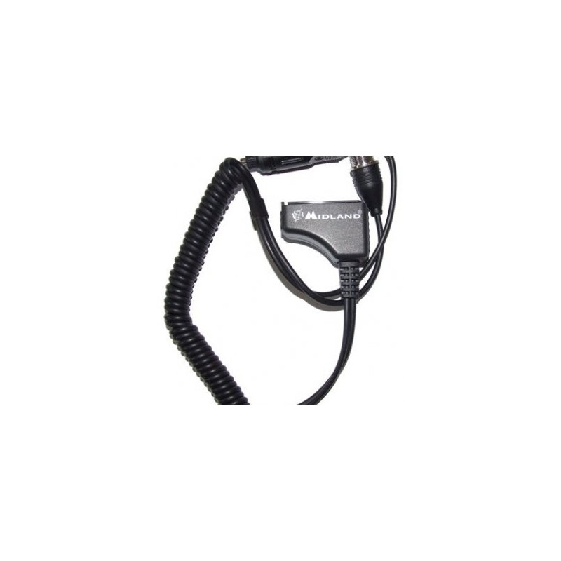

TERRA | Antenos | Vietinės televizijos antenos tiesiai iš gamintojo

Terra, UAB
Apie mus Paslaugos Kontaktai Naujienos Kaip pirkti? Produktų katalogas Antenos - Palydovinės antenos - Vietinės TV antenos - Radio antenos Imtuvai Konverteriai Konverterių laikikliai Diseq komutatoriai Tvirtinimo elementai Kabeliai Jungtys LTE filtrai Stiprintuvai Stiprintuvai - sumatoriai Komutatoriai (Multiswich) Moduliatoriai Dalikliai - atšakotuvai Rozetės Maitinimo šaltiniai Instaliacinė įranga Optinė įranga IP stebėjimo kamerų sprendimai Sprendimai viešbučiams TERRA prekių katalogos 2019Vietinės TV antenos
Antena DIP-11 (21-60) DVB-T 9,40 Eur Plačiajuostė TV antena DIP11 DVB-T
● Kanalas: 21-60
● Elementų sk.: 11
● Stiprinimas: 10 dB max
Plačiau Antena DIP-16 (21-60) DVB-T 11,00 Eur
Plačiajuostė TV antena DIP 16 DVB-T
● Kanalas: 21-60
● Elementų sk.: 16
● Stiprinimas: 12dB max
Plačiau Antena DIP-19 (21-60) DVB-T 12,50 Eur
Plačiajuostė TV antena DIP 19 Digital
● Kanalas: 21-60
● Elementų sk.: 19
● Stiprinimas: 14dB max
Plačiau Antena DIP-44 (21-60 ) DVB-T 30,00 Eur
Plačiajuostė TV antena DIP 44 Tri Digital
● Kanalas: 21-60
● Elementų sk.: 44
● Stiprinimas: 16,8dB max
Plačiau Antena ATX 91 (21-60) DVB-T 30,00 Eur
Plačiajuostė TV antena ATX-91
● Kanalas: 21-60
● Elementų sk.: 91
● Stiprinimas: 18dB max
Plačiau Puslapių kūrimas Svetainių kūrimas crm © 2020. Visos teisės saugomos.